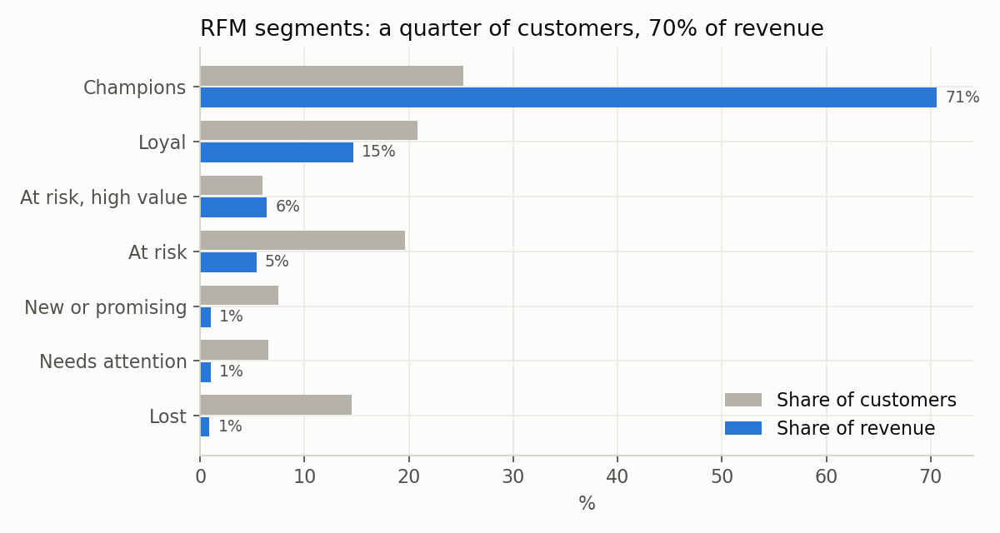

Project 1 · SQL
Where does an online retailer's revenue really come from?
Question: a UK online gift wholesaler has two years of transactions (1M rows). Is it growing, who is it depending on, and where should marketing spend its time?
Revenue is flat (+2%) and rests on a shrinking base: the top 10% of customers bring in 63% and first-time customers fell 41% year on year.
- 349 high-value customers have gone quiet. They spent £1.07M. Winning back one in five is worth about £100k a year.
- 44% of new customers reorder within 90 days, and 24% never return, so the second order is the moment to act on.
- Cleaning mattered: two cancelled 75,000-unit orders were entry errors that made random products look like best sellers.
